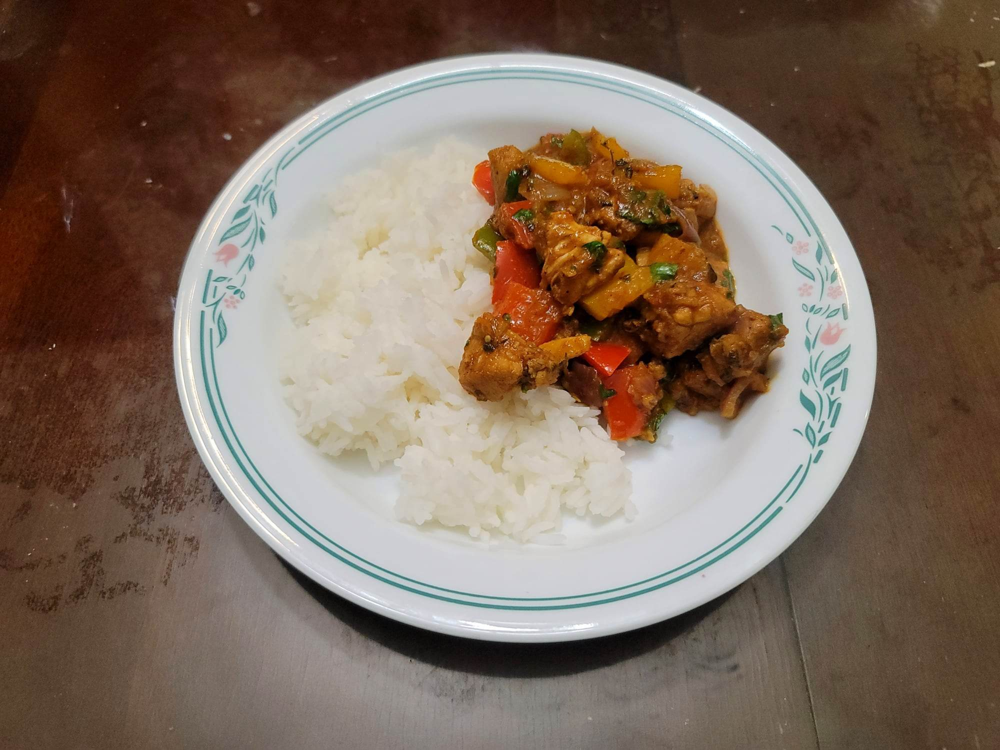

Chicken Jalfrezi

Ingredients:
Marinade:
- 1 1/4 lb Chicken thighs, boneless, skinless, 1" cubed
- 2 tsp Lemon juice
- 1/4 tsp Salt
- 1/4 tsp Black pepper
- 1/2 tsp Kashmiri chili powder
Chicken Jalfrezi:
- 2 tbsp Oil
- 1 Onion, diced
- 1/2 tbsp Ginger, grated
- 3/4 tbsp Garlic, grated
- 1 tsp Kashmiri chili powder
- 1 tsp Garam masala
- 1/2 tbsp Ground coriander
- 1/2 tsp Cumin
- 1/2 tsp Ground Fennel
- 1/4 tsp Turmeric
- 1 tsp Sugar
- 3/4 cup (250 g) Tomato puree
- 1 tbsp Kasuri methi
- 1/4 cup Hot water, if needed
- 1-2 tbsp Ghee
- 1 Dried red chili
- 1 Green chili, slit
- Optional: 1 inch Ginger, peeled, julienned
- 1 small Onion, diced
- 1 small Red bell pepper, chopped into squares
- 1 small Green bell pepper, chopped into squares
- 2 tbsp Cilantro, chopped
Instructions:
- Combine the marinade ingredients and let marinate 15-20 minutes or over night.
- Heat a large pan with oil over medium-high and add the onion. Sauté until softened and starting to brown, about 4-7 minutes.
- Reduce the heat to medium and add in the garlic and ginger. Sauté for about a minute.
- Add in the chicken and stir fry on medium-high heat for 3-4 minutes or until no longer pink.
- Throw in the spices and sauté for about 30 seconds. Then add in the tomato puree and let cook until reduced and you can start to see the oil separate from the sauce, about 5-15 minutes. If needed, add in the 1/4 cup hot water.
- Meanwhile, in a separate pan heat the ghee over medium and add the green chili, dried red chili, and ginger. Once fragrant, after about a minute, add in the bell peppers and onion. Sauté 2-4 minutes or to preference.
- When the sauce has thickened in the first pan, Add in the kasuri methi, sugar, and the sautéd vegetables plus ghee from the pan. Stir and let cook for about 1-2 minutes.
- Taste and adjust salt as needed. Remove from the heat and stir in the cilantro. Serve immediately over rice or with flatbread.